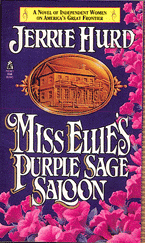

About . . .
Miss Ellie's Purple Sage Saloon


This book started with a little-known fact:
The Women’s Christian Temperance Union is still the largest women’s movement the world has ever known.
In other words, the 19th Century women, who wanted to put an end to drinking alcohol, managed to organize more women than any woman’s organization before or since.
Yet they were wrong-headed.
They understood the problem. They were deeply concerned about abused women and other issues that we would recognize today. However, their idea was to reform men rather than change laws to protect women. If they could close the saloons and put an end to “demon rum,” they thought that men everywhere would become gentlemen.
Ironically, at the same time, many 19th Century women braved the American frontier because they wanted to own land and open their own businesses; opportunities (rights) denied them in the more settled east.
What if a women saloon-owner were to be confronted with a woman temperance leader determined to close her down? What if the two women loved the same man? Miss Ellie’s Purple Sage Saloon grew out of those two questions.

Interesting Tidbits:
-
The Women’s Christian Temperance Union still exists. It is the oldest continuing non-sectarian women’s organization in the world. To join you sign a pledge not drink alcohol and pay annual dues.
-
The WCTU managed to dry up the United States for 13 years. From 1920 to 1933, it was illegal to sell, manufacture, or transport alcohol. This is known as the Prohibition Era. This was accomplished by the passage of the 18th Amendment to the Constitution.
-
Various organizations have been trying to pass the Equal Rights Amendment since 1923 without success.
-
Woman on woman conflict is unusual enough that novels, like this one, often get singled out for that particular focus. It's more common for the conflict to be between a man and a woman, even in women's fiction.

"Jerrie Hurd writes with a style that is unique and captivating. Miss Ellie's Purple Sage Saloon is entertaining from beginning to end"
-- Kristina Wright, Literary Times
"Hurd, just as quirky, powerful, and zealous as her heroines, portrays the causes of the past and present in . . . fine, spunky style."
--Publishers Weekly
"I just read Miss Ellie's Purple Sage Saloon and love it! It's well-written, well-plotted, and appealing!"
--Susan Armitage, editor, The Women's West
"Couldn't put the book down."
--Cindy Bonner, author, Lily
©Jerrie Hurd (all text, photos, design)